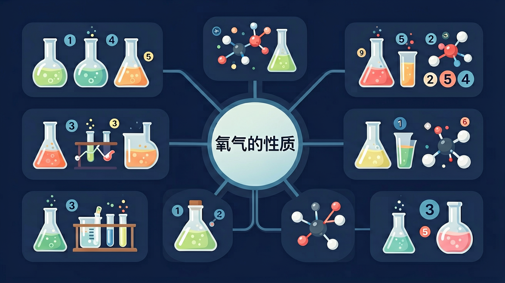

Gallery
v1.0.0 · skill v7.14.1
🎯 能说出氧气无色无味、密度略大于空气的物理性质
🎯 能判断碳、硫、铁在氧气中燃烧的实验现象
🎯 能分析氧气在燃烧反应中作为助燃剂的作用原理
❓ 为什么木炭烧起来会变小？氧气去哪了？
❓ 氧气能让所有东西燃烧吗？为什么铁锈不冒火？
❓ 呼吸时吸进氧气，呼出的气体里氧气去哪了？
学完这一课，这些问题你都能自信地回答。
下列属于氧气物理性质的是？
硫在氧气中燃烧的现象是？
选一个你关心的问题，后面的内容会围绕它展开。
选择或输入后，本课会围绕你的问题展开。
已经知道：空气中有氧气，我们靠它呼吸。
但是问题是：我们看不见氧气，它到底长什么样？有多重？能溶在水里吗？
所以这一段要解决：系统认识氧气的五个物理性质。
通常状况下，氧气是无色、无味的气体。降温到 −183°C 变成淡蓝色液体，−218°C 变成淡蓝色固体。
氧气密度为 1.429 g/L，略大于空气（1.293 g/L）。因此收集氧气可用向上排空气法。
氧气不易溶于水（1L 水约溶 30mL O₂）。因此可用排水集气法收集氧气。鱼类靠水中溶解氧呼吸。
木炭在空气中燃烧只发出红光，但在纯氧中呢？
木炭在氧气中剧烈燃烧，发出明亮的白光，放出大量热。生成的气体使澄清石灰水变浑浊。
C + O₂ → CO₂
碳 + 氧气 → 二氧化碳（化合反应）
木炭应从上而下缓慢伸入集气瓶，避免氧气受热膨胀逸出。夹木炭的坩埚钳应由瓶口逐渐下移。
硫在空气中：微弱淡蓝色火焰
硫在氧气中：明亮蓝紫色火焰
S + O₂ → SO₂
生成有刺激性气味的二氧化硫
铁丝在空气中：仅红热，不燃烧
铁丝在氧气中：剧烈燃烧，火星四射
3Fe + 2O₂ → Fe₃O₄
生成黑色固体四氧化三铁
⚠️ 铁燃烧实验关键：集气瓶底必须预留少量水或铺一层细沙，防止高温熔融物溅落炸裂瓶底！
题目：有三瓶无色气体，分别是空气、氧气和氮气。如何用最简单的方法将它们一一鉴别出来？
三种气体均无色无味，不能靠看/闻区分。氧气能助燃（使带火星木条复燃），氮气不支持燃烧（使火焰熄灭），空气含约21%氧气（木条正常燃烧后缓慢熄灭）。
带火星的木条 是最佳选择。它遇氧气复燃（唯一特征反应），在空气中无变化（不会重新着火），进入氮气中立即熄灭。
分别用带火星的木条伸入三瓶气体中：① 木条复燃→氧气；② 木条无明显变化（火星不灭也不复燃）→空气；③ 木条立即熄灭→氮气。
不能用燃着的木条（非带火星）检验氧气——燃着的木条伸入氧气中火焰会更旺，但没有"复燃"那样明确的判断标志。也不能用澄清石灰水，因为空气和氮气都不会让它变浑浊。
铁丝在空气中不能燃烧，在纯氧中却能剧烈燃烧、火星四射。这说明什么？
设计实验对比蜡烛在空气/纯氧中的燃烧
为什么带火星的木条放入氧气中会复燃？

通过燃烧实验观察反应物质量变化，理解氧气参与化学反应的本质
氧气通过提供氧元素使物质发生氧化反应，释放能量
对比碳/硫燃烧的剧烈程度，理解氧气浓度对反应速率的影响
用带火星木条复燃实验直观展示氧气助燃性
解释高原反应与氧气浓度的关系，联系生活实际
观察氧气分子（O₂）在不同温度下的运动状态变化。切换固态/液态/气态，理解氧气的三态变化。
💡 点击切换「氧气」分子，调节温度滑块，观察分子运动速度和状态变化。注意气态氧气分子快速无规则运动的特点。
先独立作答，再点选项查看对错与错因。
潜水员看到的淡蓝色液体最可能是
下列氧气性质实验操作正确的是
氧气瓶运输时必须张贴的标识是
硫在氧气中燃烧产生____色火焰
答案：蓝紫
区别于空气中淡蓝色
工业制氧气利用液态氮和液态氧的____不同进行分离
答案：沸点
氮气沸点-196℃低于氧气
（中考题）鉴别氧气和空气的最佳方法是？
铁在氧气中燃烧生成物颜色是？
（迁移题）高原煮饭要用高压锅，主要因为？
✅ 氧气是助燃剂，自身不可燃
💡 混淆可燃物与助燃剂概念
✅ 呼出气体仍含约16%氧气
💡 忽视人体对氧气的利用效率
回到最初的问题——为什么带火星的木条伸入氧气中会复燃？因为氧气化学性质活泼，具有助燃性。纯氧中氧气浓度是空气的约5倍，足以让木条上残余的火星重新获得足够的氧气而发生剧烈燃烧。
下列对氧气性质的描述中，哪一项是错误的？
口诀：氧气助燃本领强，碳硫铁烧现象狂
类比：氧气像热情的助演，让物质燃烧这场戏更精彩